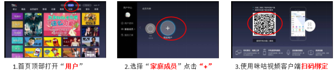
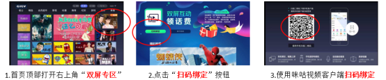

未来
首页顶部菜单栏，打有“用户”角标，进入到用户中心。
选择“家庭成员”，点击“+”添加成员。
展示二维码，使用咪咕视频客户端扫码绑定。

银河
首页右上角位置，打有“双屏专区”角标图片，图片会不定期更换。
进入到双屏专区，点击“扫码绑定”按钮。如用户第一次使用，会提示安装“咪视通”，安装完成后需退出首页再次从首页-双屏专区入口进入。
选择“+”图标添加用户，展示二维码，使用咪咕视频客户端扫码绑定。
